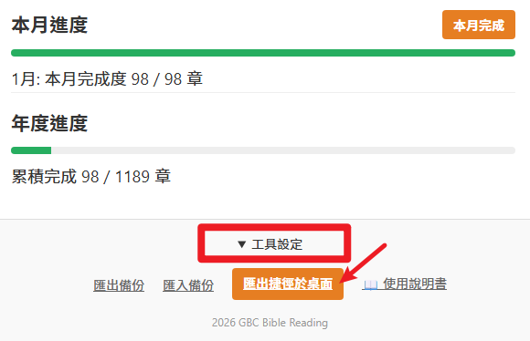

平安！親愛的弟兄姊妹
這是一份操作指南，幫助您輕鬆地在手機或電腦上追蹤讀經進度。
Peace be with you!
This is a guide to help you easily track your Bible reading progress on mobile or desktop.
一、如何儲存讀經工具？
1. How to save this tool?
從工具設定，點擊「匯出捷徑於桌面」。
From Tools settings, click "Export Desktop Shortcut".

直接安裝應用程式：2026 聖經讀經計畫 即可。
或者，點擊網址列右側「星形」圖示加入書籤，
或點擊選單「儲存分享」>「建立捷徑」。
Directly install the app: 2026 Bible Reading Plan.
Or, click the "Star" icon
to the right of the address bar to bookmark,
or select "Save
and Share" > "Create Shortcut" from the menu.

點擊下方導覽列的「分享」圖示（方塊往上箭頭），
向上滑動找到「加入主畫面」(+)，
點擊右上角「新增」。
Tap the "Share" icon (square with upward arrow),
scroll up to find "Add to Home
Screen" (+),
and tap "Add" in the top-right.

直接安裝應用程式：2026 聖經讀經計畫 即可。
或者，於瀏覽器點擊右上角「三個點」選單，
選擇「安裝應用程式」或「加到主畫面」。
Directly install the app: 2026 Bible Reading Plan.
Or, tap the "Three Dots"
menu in your browser,
and select "Install app" or "Add to Home Screen".
二、如何快速追回進度
2. How to catch up on progress quickly

1. 快速跳往未讀進度
2. 直接點選圈圈完成進度
3. 甚至可以直接追回整月進度！

1. Quickly jump to unread plans
2. Tap the progress circles to mark as done
3. You can even catch up on the entire month at once!
三、為何我的進度會消失
3. Why did my progress disappear?
本程式將進度儲存在瀏覽器「快取」中。
就像在書本裡夾書籤，如果更換了瀏覽器、使用「無痕模式」，或清理了手機空間，進度可能會重置。
This program stores your progress in your browser's "cache".
It's like a bookmark in a book;
if you switch browsers, use "incognito mode", or clear your phone space, your progress may be
reset.
四、如何同步進度到其他裝置？
4. How to sync to another device?
點擊設定中的「匯出備份」，會產生一段專屬代碼檔案。在新裝置上點擊「匯入備份」並選擇該檔案即可同步。
Click "Export Backup" in settings to generate a unique backup file. On your new device, click "Import Backup" and select that file to sync.